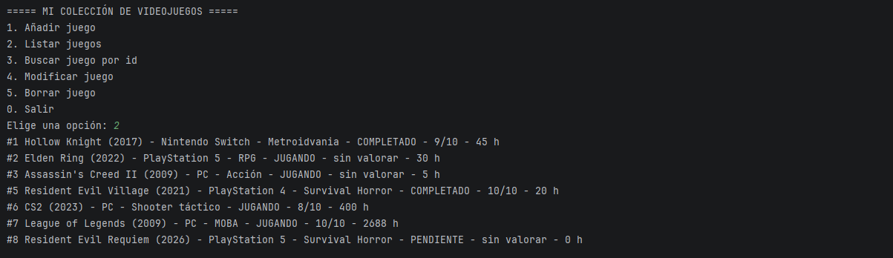

Colección de videojuegos
Programa para organizar una colección de videojuegos: añadir juegos, consultarlos, modificarlos y borrarlos. Guarda los datos en una base de datos y comprueba que todo lo que se escribe sea correcto.
Java · PostgreSQL · Maven
Ver el código en GitHub